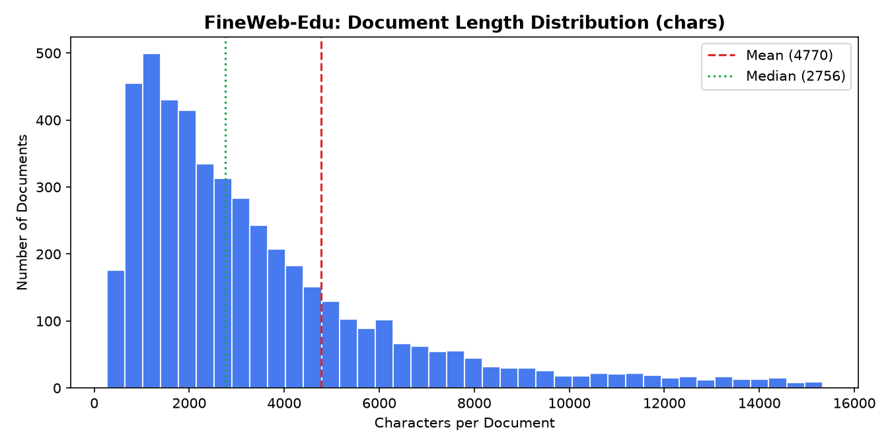
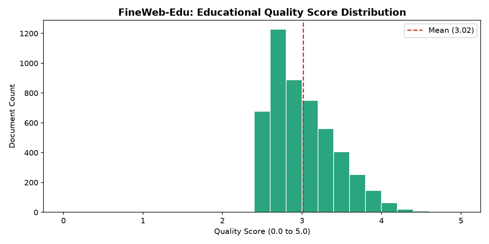

Dataset: HuggingFaceFW/fineweb-edu (config: sample-10BT)
5,000
23,848,948
3,860,595
4770 chars
2,756 chars
3.02 / 5.0
| Metric | Characters | Words |
|---|---|---|
| Minimum | 264 | 45 |
| Mean | 4,769.79 | 772.12 |
| Median | 2,756 | 448 |
| Maximum | 124,276 | 19,686 |
| Standard Deviation | 7,402.68 | - |

Educational scores generated via classification models on FineWeb documents:
| Integer Score (Bucket) | Document Count |
|---|---|
| Score 3 | 4,319 |
| Score 4 | 679 |
| Score 5 | 2 |

Sampled ASCII character representation: 99.81% (clean, standard English educational content).
ID:
URL: http://austenauthors.net/the-independent-jane
The Independent Jane For all the love, romance and scandal in Jane Austen’s books, what they are really about is freedom and independence. Independence of thought and the freedom to choose. Elizabeth’s refusal of Mr. Collins offer of marriage showed an independence seldom seen in heroines of the day...
ID:
Taking Play Seriously By ROBIN MARANTZ HENIG Published: February 17, 2008 On a drizzly Tuesday night in late January, 200 people came out to hear a psychiatrist talk rhapsodically about play -- not just the intense, joyous play of children, but play for all people, at all ages, at all times. (All sp...
ID:
URL: http://www.childline.org.uk/Explore/SexRelationships/Pages/HIVAIDS.aspx
How do you get HIV? HIV can be passed on when infected bodily fluid, such as blood or semen, is passed into an uninfected person. Semen is the liquid which is released from a man's penis during sex which carries sperm. It can be infected with HIV or AIDS when someone is HIV positive or is carrying t...